Pensez à activer la boucle pour voir le graphique s'animer.
Légende :
Consigne
Verre (centre)
Cuivre
Sujet : Quel est le procédé de régulation le plus efficace pour réaliser des économies d'énergies sur un système ?
Introduction
Pour mieux comprendre ce projet, il est nécessaire de plonger dans le vaste univers de l’astrophotographie, et des techniques utilisées pour capturer les astres. Prendre des photos de l’espace de bonne facture requiert de nombreuses connaissances dans le monde numérique, de la photographie, de la physique et de l’astronomie. Mais alors, comment ça marche ?
Tout d’abord, une photo de la Voie lactée, ou de n’importe quel élément du ciel ne se prend pas en une photo, puisqu’elle n’aurait pas assez d’informations, et les mouvements de l’atmosphère seraient bien trop présents pour distinguer un quelconque détail. Pour arriver à des photos détaillées, sans trop de bruit numérique, il est nécessaire de réaliser des poses longues d’environ 20/30 secondes par prise, et de faire une grande succession d’images qui seront assemblées en post-production. Moins l’astre est lumineux, plus il faudra de photo pour obtenir les détails croustillants qu’il contient.
Photos de la Voie lactée :
C. Edern Clemente - 30 secondes d’exposition par photo x 30 prises
C. Edern Clemente - 30 secondes d’exposition par photo x 30 prises
Nous pouvons observer que le temps de prise de ces photos n’est pas très long car la Voie lactée est très lumineuse (30x30=900s). Cela se fait donc relativement rapidement, sans besoin de matériel particulier si ce n’est un trépied et un appareil photo équipé d’un objectif à grande ouverture. Les photos sont ensuite assemblées à l’aide d’un logiciel qui se charge d’empiler l’ensemble, en alignant les étoiles correctement (car la terre tourne).
Dans le cas des photos de plus longue durée c’est une toute autre histoire :
C. Ronan Clemente - 120 secondes d’exposition par photo x 600 prises

C. Ronan Clemente - 120 secondes d’exposition par photo x 800 prises
Vous comprendrez alors que cela pose des problèmes logistiques : Comment laisser le matériel photo dehors toute la nuit ? Comment éviter les mouvements du ciel lors de la pose longue ? Comment éviter la condensation de se déposer sur l’objectif ?
Suivi de la rotation terrestre :
Pour que notre appareil photo suive la rotation terrestre nous utilisons une monture motorisée qui réalisera les mouvements de façon lente et permettra au champs de l’objectif de suivre précisément les étoiles désirées. Photo ci-dessous :

Pour assurer ce suivi, nous utilisons une caméra de guidage qui informera le PC ou la Raspberry Pi des corrections à effectuer. Photo ci-dessous :

Une fois la Raspberry Pi informée de la position des étoiles par la lunette de guidage, le logiciel PHD2 se chargera de traiter les données, et de communiquer les informations à la monture par ses 2 ports : accélérer ou ralentir. Voici une photo du logiciel :
Eviter la buée sur la lunette :
Les photos étant prises la nuit, l’air ambiant est souvent saturé avec une forte hygrométrie relative et une température basse. Ainsi, de la condensation va se former sur le matériel placé à l’extérieur, et également sur les verres de l’objectif ou de la lunette. Or, comme nous souhaitons prendre des photos les plus détaillées possibles, avoir un voile de buée devant un élément qui nous permet de capturer l’image est évidemment une chose à proscrire. Pour éviter cela nous installons alors une résistance chauffante autour de l’objectif pour garder la température du matériel au dessus du point de rosée et éviter la condensation sur celui-ci. C’est précisément ce que nous étudierons dans ce projet.

Dew heater, puissance 10W, température max : 60°C
Pour réaliser notre régulation nous prendrons des hypothèses sur les températures et l’hygrométrie de notre point extérieur. Après avoir réalisé des recherches météos, nous prendrons un point d’air extérieur classique de : 6 degrés Celsius ; 80% d’humidité.
Ainsi notre point de rosé, selon le diagramme de l’air humide en python dans les fichiers du projet est de 3°C. Cela sera donc notre consigne. En réalité la température de rosée de l'air évolue et sera prise en compte ultérieurement dans le rayonnement de l'athmosphère.
Petite précision : ces résistances ne sont jamais régulées en puissance pour réaliser des économies d’énergie. Mais pour complexifier l’étude nous réaliserons une régulation de puissance suivant les méthodes vu en cours de régulation.
Détermination du modèle
Pour étudier la température de notre verre, nous devons d’abord nous fixer un modèle physique relativement simple et réaliste. Pour cela, intéressons-nous d’abord à comment est réalisé l’objectif :

Nous pouvons observer que l’objectif est relativement simple à traduire en modèle, en revanche la partie en aluminium est beaucoup plus complexe car elle possède des vides d’air. Cela nécessiterait donc un plus grand nombre de cubes pour considérer la non-homogénéité de l’élément. Nous ne le prendrons donc pas en compte. En revanche, la résistance en cuivre est entourée de tissus pour la protéger, que nous considèrerons dans le modèle :

Rendu 3D sous blender
Comme nous pouvons le voir ci-dessus, le modèle physique choisi est beaucoup plus simple. Au centre nous avons du verre, dont le point central sera notre point de mesure. A noter que le diamètre de l'objectif est de 0.005 * 11 = 5.5cm. Le verre est entouré d'une résistance en cuivre qui se chargera de le maintenir à température pour éviter la condensation. Puis, nous considérerons le tissus isolant placé autour du cuivre : au dessus, en dessous et sur les côtés. Notre modèle sera donc en 3D et prendra en compte l'air autour de lui qui évoluera de façon sinusoïdale en comprenant le rayonnement de la voûte céleste (jour type d'hiver).
Nous aurons donc 3 matrices à considérer dans notre problème (voir photo précédente) :
| Epaisseur (m) | 0 | 0.005 | 0.01 | 0.015 | 0.02 |
| Composition | Air | Isolant + Air | Verre + Cuivre + Isolant + Air |
Isolant + Air | Air |
| Stockage | Scalaire | Matrice 1 | Matrice 2 | Matrice 3 | Scalaire |
* Dans le logiciel en haut de page, nous affichons la matrice 2 avec les valeurs de température à T+.
Recherche de symétrie
Comme il s'agit d'un cylindre de rayon constant, nous pourrions faire une matrice en 2D pour faciliter les calculs. Cela permettrait de gagner en performances.
Notre modèle pourra donc se mettre sous forme de matrice comme cela :
| 0.7 | 0.7 | 0.7 | 0.7 | 0.7 | 0.7 | 0.7 | 0.7 | 0.7 |
Légende :
Air
Isolant
Cuivre
Verre
Mesure
Nous choisirons cependant de réaliser des matrices complètes qui nous permettront de nous initier à la 3D.
Méthode de calcul
Recherche des équations
Pour réaliser notre méthode de calcul j'ai appliqué la méthode vu en cours de techniques numériques, mais qui, cette fois, sera réalisée en 3D. Cette méthode se base sur un ensemble de cubes, de résistances thermiques différentes et sur lesquels leurs températures à l'instant T+1 sont basées sur les autres cubes adjacents à l’instant t. Puisque nos variables sont à l’instant t, et non t+1 - en explicite donc - nous aurons des problèmes de divergence et ne pouvons pas augmenter le pas de temps indéfiniment. Cela nous empêchera par exemple d’avancer très vite dans le temps, et d'analyser le modèle et ses limites sur plusieurs jours.
Rendu 3D sous blender
Nous pouvons voir sur l’image ci-dessus que la résistance thermique comprendra en réalité 2 lambda, 1 pour chaque matériau, et donc une épaisseur divisée par 2 pour chaque lambda.
Commençons par exprimer un bilan en régime transitoire :

Nos échanges étant conducto-convectifs, pour simplifier les choses, nous ramènerons h à un lambda équivalent. Cela nous permettra d'avoir des matrices simples. L’accumulation du matériau sera exprimée par m* Cp * dT. La puissance fournie quant à elle sera celle distribuée par les cubes de cuivre par effet Joule. Nous obtenons donc :
Isolons alors T+ de notre équation :
Nous pouvons voir que nous arrivons à une expression assez longue qui sera difficile et longue à exprimer dans notre code Javascript. Pour simplifier les choses nous utiliserons le nombre de Fourier : Fo = sigma * dt / L^2. Cela nous permettra d'isoler nos constantes et de ne pas faire des calculs inutiles à chaque itération. Nous obtenons alors pour Fourier Nord par exemple :
Une fois Fourier introduit et calculé pour chacune des orientations nous pouvons alors définir T+ plus simplement :

Attention : Il faudra veiller à ce que le terme devant le T ne soit jamais inférieur à 0 sinon notre suite divergera.
Rayonnement de la voûte céleste
Pour ajouter un peu de compléxité nous ajouterons le rayonnement de la voûte céleste dans nos calculs. En effet, elle a un effet important sur le matériel stocké dehors en pleine nuit, et l'ammène à être plus froid que la température extérieure réelle. Pour cela nous utiliserons la formule suivante pour l'émissivité du ciel :

Et cette formule pour la température du ciel :
Nous pouvons observer que ces formules dépendent d'une valeur que nous n'avons pas : la température de rosée. Cette température est amenée à grandement varier à cause des vents, de l'évaporation etc. Nous analyserons donc les fichiers météos du site de Grenoble Saint-Geoirs (38) en période hiver pour modéliser l'évolution de la température de rosée :
Nous pouvons voir que sur la journée + nuit du 30 janvier 2022 la température de rosée évolue de manière sinusoidale. Nous approximerons donc l'évolution par un sinus.
Il s'agit maintenant d'incorporer nos formules dans les résultats précédents. Pour cela nous utiliserons une température extérieure équivalente, évidement plus basse que la température normale.
Les éléments des matrices contenant Tair seront donc corrigés à l'aide de cette formule.Traduction du code
L'objet data
Pour raisonner de manière logique, il convient d’abord de définir les principales données du projet. Je les ai compilées dans un objet data pour plus de praticité (j'ai choisi de fonctionner partiellement en Model View Controller pour faciliter la lisibilité du code) :
//Toutes la valeurs peuvent être éditées pour adapter le projet let data = { initTemp: (5 * Math.sin(3)).toFixed(1), time: 0, dt: 0.1054, //Max 0.1054 sinon divergence dx: 0.005, //dx = dy = dz lambdaEqExt: 0.005 * 15 / 2, //dx * hair / 2 volume: Math.pow(0.005, 3), computing: false,//On ne calcul pas dès le début computeTime: 2, //Temps entre les itérations maxPower: 7/36, //Nous avons 36 cubes de cuivre power: 0, powerMode: '0', setPoint: 3,//Consigne consumption: 0, temperatureList: {centerTemperature: [], copperTemperature: []},//Pour tracer le graphique offsetSum: 0//Integrale de e(t) de 0 à t }
Propriétés du modèle
Dans un deuxième temps nous enregistrons les différentes propriétés de nos matériaux dans un objet. Toutes les valeurs proviennent de table physique, sauf pour l’isolant autour du cuivre dont je n'avais pas d’information, hormis qu’il s’agit d’une sorte de tissu peu efficace thermiquement. J'ai donc modifié les valeurs de masse volumique et de résistance thermique pour s’adapter au produit.
A = {name: 'air', color: '#73b9f4', temperature: data.initTemp, cp: 1004, lambda: data.lambdaEqExt, rho: 1.3}, C = {name: 'copper', color: '#54e8aa', temperature: data.initTemp, cp: 380, lambda: 401, rho: 8960}, G = {name: 'glass', color: '#98fa7f', temperature: data.initTemp, cp: 720, lambda: 1, rho: 2530}, I = {name: 'insulation', color: '#3884c5', temperature: data.initTemp, cp: 1020, lambda: 0.6, rho: 400},
Ensuite, il est important de stocker les informations de l’agencement des cubes. Pour cela nous utiliserons des arrays. De cette façon nous pouvons utiliser différents patterns et les éditer suivant nos envies :
objectSliceList = [[[A],[A],[A],[A],[A],[A],[A],[A],[A],[A],[A],[A],[A],[A],[A],[A],[A]], [[A],[A],[A],[A],[A],[A],[I],[I],[I],[I],[I],[A],[A],[A],[A],[A],[A]], [[A],[A],[A],[A],[I],[I],[C],[C],[C],[C],[C],[I],[I],[A],[A],[A],[A]], [[A],[A],[A],[I],[C],[C],[G],[G],[G],[G],[G],[C],[C],[I],[A],[A],[A]], [[A],[A],[I],[C],[G],[G],[G],[G],[G],[G],[G],[G],[G],[C],[I],[A],[A]], [[A],[A],[I],[C],[G],[G],[G],[G],[G],[G],[G],[G],[G],[C],[I],[A],[A]], [[A],[I],[C],[G],[G],[G],[G],[G],[G],[G],[G],[G],[G],[G],[C],[I],[A]], [[A],[I],[C],[G],[G],[G],[G],[G],[G],[G],[G],[G],[G],[G],[C],[I],[A]], [[A],[I],[C],[G],[G],[G],[G],[G],[G],[G],[G],[G],[G],[G],[C],[I],[A]], [[A],[I],[C],[G],[G],[G],[G],[G],[G],[G],[G],[G],[G],[G],[C],[I],[A]], [[A],[I],[C],[G],[G],[G],[G],[G],[G],[G],[G],[G],[G],[G],[C],[I],[A]], [[A],[A],[I],[C],[G],[G],[G],[G],[G],[G],[G],[G],[G],[C],[I],[A],[A]], [[A],[A],[I],[C],[G],[G],[G],[G],[G],[G],[G],[G],[G],[C],[I],[A],[A]], [[A],[A],[A],[I],[C],[C],[G],[G],[G],[G],[G],[C],[C],[I],[A],[A],[A]], [[A],[A],[A],[A],[I],[I],[C],[C],[C],[C],[C],[I],[I],[A],[A],[A],[A]], [[A],[A],[A],[A],[A],[A],[I],[I],[I],[I],[I],[A],[A],[A],[A],[A],[A]], [[A],[A],[A],[A],[A],[A],[A],[A],[A],[A],[A],[A],[A],[A],[A],[A],[A]] ]
Calcul par intervalle
En termes de code, nous fonctionnons à l’aide d’une intervalle (inarrêtable), qui appelle une fonction toutes les x millisecondes. Si vous souhaitez changer le temps d’appel de la fonction, donc la rapidité de calcul vous pouvez le régler dans l’objet data qui contient toutes les données du projet. Voici donc le rendu de la boucle :
//Nous appellons notre Handler qui se charge de la réflexion principale function updateHandler() { // Si nous sommes en pause nous ne faisons rien (setInterval en JS n'est pas arrêtable autrement) if(data.computing == false) { return } //Nous calculons toutes les matrices updatePower(data.powerMode) updateTemperatureValues() updateTime() updateEnergy() updateOffsetSum() //Nous affichons toutes les valeurs updateTimeView(data.time) updatePowerView(data.power) updateEnergyView(data.consumption) } //Notre intervalle appelle la fonction updateHandler() toutes les x millisecondes setInterval(updateHandler, data.computeTime)
Evolution de la température extérieure
Notre température évoluera en fonction d’un sinus réalisé pour l‘occasion :
item.temperature[1] = 5 * Math.sin((1 / 86400) * data.time * 2 * Math.PI + 3)
Evolution de la température de rosée extérieure
Notre température de rosée évoluera en fonction d’un sinus réalisé pour l‘occasion :
tDew = 4 * Math.sin(2 * Math.PI * data.time / 86400 + 3) - 1
Mise en equation du modèle
Maintenant que nous avons défini comment vont fonctionner nos données, et comment les fonctions sont appelées, nous nous intéressons désormais à la mise en équation de notre modèle. Pour cela, comme nous avons défini préalablement nos équations, nous avons plus qu’à les appliquer en sachant que le cuivre devra intégrer la puissance délivrée, et l’air n’aura pas de température définie autrement que par un sinus.
item.foNorth = data.dt / (data.dx * data.dx * item.rho * item.cp * (1 / 2 / item.lambda + 1 / 2 / objectSliceList[row - 1][square][0].lambda)) item.foSouth = data.dt / (data.dx * data.dx * item.rho * item.cp * (1 / 2 / item.lambda + 1 / 2 / objectSliceList[row + 1][square][0].lambda)) item.foWest = data.dt / (data.dx * data.dx * item.rho * item.cp * (1 / 2 / item.lambda + 1 / 2 / objectSliceList[row][square - 1][0].lambda)) item.foEast = data.dt / (data.dx * data.dx * item.rho * item.cp * (1 / 2 / item.lambda + 1 / 2 / objectSliceList[row][square + 1][0].lambda)) item.foAboveAndBelow = data.dt / (data.dx * data.dx * item.rho * item.cp * (1 / 2 / item.lambda + 1 / 2 / A.lambda)) //Le Fo pour le cuivre doit prendre en compte le lambda de l'isolant if(item.name == 'copper') {item.foAboveAndBelow = data.dt / (data.dx * data.dx * item.rho * item.cp * (1 / 2 / item.lambda + 1 / 2 / I.lambda)) } //Ne doit jamais être < 0 sinon divergence item.stabilityValue = (1 - item.foNorth - item.foSouth - item.foWest - item.foEast - 2 * item.foAboveAndBelow) item.temperature[1] = item.stabilityValue * item.temperature[0] + item.foNorth * objectSliceList[row - 1][square][0].temperature[0] + item.foSouth * objectSliceList[row + 1][square][0].temperature[0] + item.foWest * objectSliceList[row][square - 1][0].temperature[0] + item.foEast * objectSliceList[row][square + 1][0].temperature[0] + 2 * item.foAboveAndBelow * objectSliceList[0][0][0].temperature[0] //Le cuivre doit prendre en compte la puissance de la résistance et la température de l'isolant au dessus et en dessous if(item.name == 'copper') {item.temperature[1] = item.stabilityValue * item.temperature[0] + item.foNorth * objectSliceList[row - 1][square][0].temperature[0] + item.foSouth * objectSliceList[row + 1][square][0].temperature[0] + item.foWest * objectSliceList[row][square - 1][0].temperature[0] + item.foEast * objectSliceList[row][square + 1][0].temperature[0] + 2 * item.foAboveAndBelow * objectSliceList[1][6][0].temperature[0] + data.power * data.dt / (item.rho * item.cp * data.volume)} item.temperature[0] = item.temperature[1]
Le code est en réalité très différent de ce qui est présenté, mais je l'ai simplifié pour mieux comprendre la démarche. Par exemple les nombres de Fourier ne sont calculés qu'au début car il s'agit de constantes, je calcule également le graphique de température en fonction du temps, les matrices... Le code est bien plus complet donc je vous invite à le regarder pour comprendre en profondeur comment les choses fonctionnent.
Présentation des résultats
Dès lors que notre modèle a été mis en équation, nous pouvons passer à la présentation des résultats. Pour cela nous allons vérifier nos matrices, afin de montrer comment elles s’agencent et ce qui nous permet de valider notre logique et la justesse du code. La première chose à vérifier est d'abord si nos lambdas sont attribués à la bonne case. Pour cela il suffit d'afficher la matrice correspondante :
Lambda =
Nos lambdas étant correctement attribués, nous allons ensuite pouvoir calculer nos nombres de Fourier en fonction de chacune des orientations. Il est important de tous les vérifier afin de s'assurer qu'il n'y a pas d'erreur de calcul. Par exemple voici le Fourier Nord de notre matrice :
FoN =
Nous pouvons observer que les cases qui diffèrent sont les valeurs impactées par la cellule Nord, ce qui prouve au minimum que notre ciblage des cellules nord est bon. Même exemple pour le Fourier Est :
FoE =
Nous pouvons observer que c’est le même cas qu’avant, mais ce sont les valeurs à l’est qui sont ciblées. Ce qui prouve également notre ciblage de nos cellules à droite.
FoS =
FoW =
FoAB =
Une fois les nombres de Fourier vérifiés, une valeur extrêmement importante à vérifier est la valeur de stabilité. Si elle est inférieure à 0 sur n’importe quelle case, notre modèle ne sera pas stable et il faudra adapter le pas dt.
Stabilité =
Dans le cas présent, nous pouvons voir que nos valeurs sont bonnes et que notre système sera stable. C'est le cas pour une certaine valeur de dt, qui semble assez faible et ne nous permet pas d'accélerer le temps à l'infini. Maintenant que nous avons vérifié toutes nos matrices, et que nos températures T et T+1 fonctionnent à l'aide du terme de puissance apporté, nous allons passer à la régulation de la puissance.
Régulation
Appareil éteint
Si l'appareil est éteint, il est évident que la puissance fournie par le dew heater à la lunette est nulle. Il suffit alors de définir la puissance P nulle en tout temps. Pour cela j'ai réalisé une fonction qui, suivant le mode de régulation, se charge de réaliser le code associé. Ainsi, pour la partie P = 0 nous avons :
case '0': data.power = 0 break
Jusque-là, rien de complexe. La puissance sera nulle en tout temps.
Appareil à pleine puissance
Dans le cas de la pleine puissance, nous avons le même raisonnement que lorsque l'appareil est éteint, sauf que la puissance délivrée doit être la puissance maximale que peut donner notre appareil. Dans notre cas nous sommes face à une résistance soumise à un courant électrique créant un effet joule (P = R x I^2).
Nous estimons alors la puissance thermique délivrée au modèle de 7W (ce qui sont des valeurs classiques pour des dew heaters).
case '100': data.power = data.maxPower break
Nous attribuons à la puissance thermique réelle la valeur maximale stockée dans l'objet data. Attention elle devra être divisée par le nombre de cube de cuivre du modèle. Elle ne sera pas de 7W pour chaque cube.
Régulation TOR
La régulation TOR, dans sa plus simple expression, devrait s'exprimer de cette manière : lorsque l'on est en dessous de la consigne on déclanche la régulation à 100%, et lorsque l'on est au dessus on arrête la régulation. Ceci serait le mode le plus simple, mais pour rajouter une plage de réglage nous introduisons un delta que nous pourrons ajuster. Il s'exprime alors comme le schéma ci-dessous :
Un delta égale à 0 pourrait être tout à fait possible, en revanche nous prendrons un delta égale à 0.25 pour le schématiser. Nous obtenons alors le code suivant :
case'0/1': //Le delta est une valeur terrain (entre 0 et 1 en général) delta = 0.25 temperatureValue = objectSliceList[8][8][1].temperature[1]//Température au centre du verre -> colonne 8 ligne 8 if(temperatureValue < data.setPoint - delta / 2) { data.power = data.maxPower } else if (temperatureValue > data.setPoint + delta / 2) { data.power = 0 } break
Régulation P
La régulation P vient apporter un peu plus de logique dans la régulation, voire beaucoup plus. Elle constitue une vraie amélioration dans la démarche, avec une valeur de consigne beaucoup plus respectée que les autres méthodes. Pour cela, nous allons utiliser une fonction y = ax + b pour laquelle nous déterminerons a et b. Nous pouvons illustrer cela par un schéma :
Comme nous pouvons le voir, il faudra prendre en compte que notre fonction est bornée entre 0 et 1 en y. Pour calculer nos paramètres nous pouvons tout d'abord aborder l'équation qui régit le mode proportionnel :
Une fois notre équation déterminée, et entrée dans notre programme, nous allons devoir déterminer nos constantes. En effet y(t) étant notre variable, nous ne connaissons pas les autres valeurs hormis la valeur de consigne y_c(t). Pour les déterminer, nous allons utiliser la méthode de Broïda qui se base sur la recherche de t28% et t40%.
Pourquoi utiliser une méthode graphique ?
Pour déterminer nos variables nous pourrions réaliser un bilan sur le verre et trouver les échanges et les interactions avec le centre. Puis, une fois le modèle caractérisé physiquement nous pourrions en déduire les valeurs. En revanche cette méthode est longue et fastidieuse. Approcher ces valeurs par la méthode de Broïda est plus utile et plus rapide en pratique, d'autant que nous avons une précision machine grâce à notre ordinateur.
La méthode se base sur la recherche de 3 points en appliquant un échelon unitaire de puissance à notre système. Pour vulgariser, nous mettons notre système à l'équilibre, puis mettons notre puissance à 100% et regardons vers quelle température maximale le centre du verre va tendre : cela nous donnera T infini. Une fois T infini trouvé, nous devons déterminer le temps pour lequel nous arrivons à 0.4 * Tinf et 0.28 * Tinf. Cela nous permettra ensuite de trouver nos valeurs à l'aide de formules empiriques.
Détermination des valeurs
Après un essai à 100% nous trouvons une valeur de stabilité de 17,32 degrés en fixant la température extérieure à une constante. Cela sera notre T infini. Déterminons maintenant les valeurs de température à chercher pour trouver ensuite t40 et t28 :
Voilà pour schématiser comment se répartissent les valeurs pour une courbe en S :
Trouvons t40 et t28 en imprimant la valeur dans la console dès que la valeur de température est atteinte au centre :
Finalement nous pouvons trouver les valeurs finales de la méthode de Broïda :
Une fois la méthode de Broïda réalisée, nous voyons bien que nous n'avons toujours pas nos inconnues à savoir Kc et S0. S0 sera égale à 0 car il s'agit d'un décalage propre au réglage, qui ne nous servira pas pour l'instant. En revanche, pour trouver Kc, nous allons devoir appliquer la formule de Ziegler-Nichols :
Maintenant que T0 et Kc sont trouvés nous pouvons réaliser notre code :
case'P': S0 = 0 //Pas d'écart à la consigne Kc = 0.13 //Déterminé par la méthode de Broida et Ziegler //Formule d'un régulateur P (0 < S < 1) S = S0 + Kc * (data.setPoint - objectSliceList[8][8][1].temperature[1]) if(S < 0) { data.power = 0 } else if(S > 1) { data.power = data.maxPower } else { data.power = data.maxPower * S } break
Après un essai nous pouvons observer que notre système est très stable mais qu'il admet un écart assez important. Voilà la représentation graphique de la courbe en S que nous obtenons :
Cet écart s'appelle l'écart statique, et est propre au régulateur proportionnel. Pour éviter cet écart et avoir une régulation plus fiable nous pouvons choisir de le remplacer par un régulateur PI ou même un PID. Nous analyserons le régulateur PI dans la prochaine partie.
Régulation PI
Le régulateur PI sera très proche du régulateur P, si ce n'est qu'il comprend une partie intégrale qui va permettre de lisser l'écart statique. Plus le temps écoulé sera grand, plus l'intégrale sera précise et le système stable.
Nouvelle équation veut aussi dire nouveaux paramètres à trouver. Nous cherchons donc Kc, S0 et Ti mais ne les avons pas. Ainsi, il suffit d'appliquer la même méthode que pour la régulation proportionnelle, à savoir la méthode de Ziegler-Nichols. S0 quant à lui sera égal à 0 comme dit précédement.
Une fois les valeurs déterminées nous pouvons réaliser notre fonctionnement en code. A savoir que l'intégrale sera une simple somme des écarts au court du temps (de 0 à t). A noter que le résultat de l'intégrale peut être négatif ou positif suivant la valeur de notre température par rapport au point de consigne.
case 'PI': S0 = 0//Pas d'écart à la consigne Ti = 425.46//Ti et Kc par la méthode de Broida et Ziegler Kc = 0.117 //Formule du régulateur proportionnel intégral S = S0 + Kc * ((data.setPoint - objectSliceList[8][8][1].temperature[1]) + data.offsetSum / Ti) if(S < 0) { data.power = 0 } else if(S > 1) { data.power = data.maxPower } else { data.power = data.maxPower * S } break
Voilà la courbe en S donnée par cette méthode de régulation :
Lorsque le temps écoulé est très grand, nous remarquons toujours un écart entre la consigne et la température du verre. Si la température extérieure est stable, nous ne remarquons par cet écart, ce qui nous ammène à conclure que ce léger écart est dû aux paramètres perturbateurs (exemple : la température extérieure variable). Pour corriger cet écart nous pouvons jouer sur les paramètres théoriques, ou ajouter de l'anticipation à l'aide d'une fonction dérivée. Ce problème vient surtour de la méthode de réslution explicite.
Régulation PID
La régulation PID n'aurait que peu d'intérêt dans notre cas, car elle permettrait de relever la température à 3°C exactement au lieu de 2.9°C (testée dans mes essais). C'est un type de régulation très précis qui permet surtout l'anticipation. Evidement, comment rouler droit quand on ne regarde pas devant ?
Voilà la formule de base :
Dans notre cas, et dans le cas du génie climatique plus généralement, nous ne cherchons pas un niveau de précision et un rapidité de convergence si importante. Voilà le code pour la régulation PID :
case 'PID': S0 = 0 Ti = 255.532 Td = 63.883 Kc = 0.156 S = S0 + Kc * ((data.setPoint - objectSliceList[8][8][1].temperature[1]) + data.offsetSum / Ti + Td * ((data.setPoint - objectSliceList[8][8][1].temperature[1]) - (data.setPoint - objectSliceList[8][8][1].temperature[0])) / data.dt) if(S < 0) { data.power = 0 } else if(S > 1) { data.power = data.maxPower } else { data.power = data.maxPower * S } break
La dérivée sera réalisée à l'aide d'un tableau de 2 valeurs (T-1 et T) par rapport au temps.
Voici la courbe que nous obtenons :
Ordre du système
En utilisant la méthode de Broida par résolution graphique, nous prenons pour hypothése que le système est du premier ordre. En réalité, notre point de mesure étant au centre du verre, nous sommes face à un système du second ordre. En effet, nous avons la masse de cuivre à chauffer, puis le verre pour jouer sur notre température mesurée.
Ordre 1 :
Ordre 2 :

Nous voyons bien que notre système est du deuxième ordre. Cependant, nous prendrons pour hypothèse que nous sommes en premier ordre, en prenant en compte un temps de retard dans notre calcul.
Rapidité de convergence
La rapidité de convergence est un sujet important pour certaines applications. Pas forcément pour la notre, mais il peut être interréssant de l'étudier et d'en tirer des conclusions pour le génie climatique. Pour réaliser nos études nous réglerons les problèmes de l'écart statique en agissant sur S0.
Convergence pour T = 20 minutes
Mode 0/1
Mode P
Mode PI
Mode PID
Comparaison des différentes méthodes
Finalement, nous pouvons trouver la méthode à appliquer suivant nos besoins (précision, rapidité de convergence) :
| Critère | 0/1 | P | PI | PID |
| Rapidité de convergence | 0 | 1 | 0.5 | 1 |
| Précision | 0 | 0 | 1 | 1 |
Dans notre cas, le mode P conviendra parfaitement car nous n'avons pas besoin d'une précision incroyable. De plus, la réalisation des intégrales et des dérivées demande plus de ressource et de mémoire.
Economies d'énergies
Pour répondre à notre sujet, la question qui se pose est de savoir quel type de régulation est le plus économique. Pour cela nous devons réaliser des relevés de consommation au cours du temps qui nous permettrons de séléctionner de façon pratique la plus économique. Il semble toutefois évident que la moins consommatrice sera la régulation P, qui a une puissance plus petite en moyenne à cause de son écart statique mais qui ne respecte pas la consigne. Nous réglerons ce problème en jouant sur le terme de source pour que la consigne soit respectée. Voici le tableau des relevés :
Temps d'étude : 3600 s
| 100% | 0/1 | P | PI | PID |
|---|---|---|---|---|
| 7 Wh | 3.57 Wh | 3.49 Wh | 3.27 Wh | 3.41 Wh |
Pour une nuit de fonctionnement de 6 heures :
| 100% | 0/1 | P | PI | PID |
|---|---|---|---|---|
| 56 Wh | 27.18 Wh | 29.58 Wh | 29.36 Wh | 29.5 Wh |
Nous pouvons voir que le mode qui consomme le moins est le mode 0/1. Il n'arrive pas à respecter la consigne et agit de façon anarchique entre 0 et 3.5. C'est donc normal qu'il consomme moins.
Conclusion sur le mode le plus économique
En réalité, le mode le plus économique est le mode PI qui met plus de temps à converger, mais nous voyons que les valeurs sont toutes très proches. Nous pouvons en déduire que trouver le mode de fonctionnement le plus économique n'a que peu d'intéret dans la mesure où tous les modes P, PI et PID (à condition qu'ils soient bien réglés) sont capable de respecter la consigne. Une fois stabilisé ils consommerons tous la même chose.
Mode 100% : Ce mode aura de l'intérêt pour des systèmes peu consommateur. Il permettra d'éviter d'investir dans des sondes et des regulateurs. Il pourra aussi servir dans des systèmes où, lorsque nous sommes à Pmax, la valeur de consigne est proche de la valeur mesurée.
Mode 0/1 : Le mode 0/1 n'a aucun intérêt. Il nécessite 1 régulateur et 1 sonde pour une précision ridicule. Dans ce cas, il vaut mieux choisir un régulateur proportionnel.
Mode P, PI, PID : Dans le cas de systèmes plus consommateur, il devient interessant d'investir dans du matériel de régulation pour réaliser des économies (50% environ). Les modes P, PI, PID sont capable de respecter la consigne. Le choix de ces 3 modes dépendra des besoins en rapidité de convergence et en précision.
Quelle batterie choisir pour une nuit de photo ?
Nous choisirons désormais notre batterie pour une nuit de 6 heures de prise de photo. Pour cela nous étudierons le mode de fonctionnement 100% et le mode PID. Le reste des modes ayant sensiblement les mêmes valeurs.
Nous choisirons une batterie portable avec une tension de 5V, ce qui est le standard sur le marché.
Mode 100%
Mode PID
Choix du produit
Nous choisirons donc ce produit qui possède une capacité de 26800 mAh :
Nous voyons que la capacité de la batterie est largement suffisante pour les 2 modes. Nous pouvons en conclure que la régulation des dew-heaters n'a que peu de sens.
Conclusion
Pour finir, ce projet fut très enrichissant pour comprendre et mettre en pratique la régulation sur un objet et observer l'action des différents modes de régulation sur celui-ci. J'ai pu appréhender les réglages et le calcul des paramètres pour avoir un système le mieux réglé possible. Cela a aussi été l'occasion de mettre en place le terme de puissance dans les équations, et de travailler en 3 dimensions plutôt qu'en "1 à 2 dimensions" jusqu'alors, bien qu'en réalité nous étions toujours en 3 dimensions, car nous n'aurions pas pu définir de masse.
Nous observons qu'il n'y a pas de réglage parfait en régulation, mais qu'il est possible de s'en rapprocher par la connaissance du modèle, bien que les paramètres externes jouent également un grand rôle dans son comportement et remettent en question les valeurs théoriques.
Par ailleurs, le comportement de l'objet semble très réaliste aussi bien sur le maintien des états stables, que sa réaction lors des tests d'échellons unitaires. Cela est très rassurant sur la fiabilité du modèle.